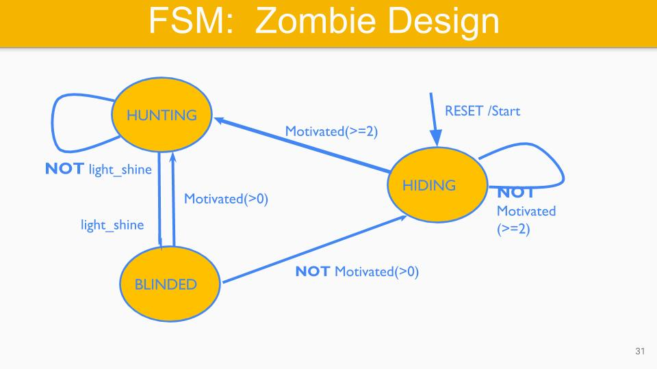

State Diagrams
State diagrams show the modes of operation of your program (or firmware). The firmware may enter different modes or stages of operation, e.g. reading the joystick or displaying the LED-Bar pattern. State diagrams are used to describe cyclic executives, such as the \texttt{main()} function or an RTOS task/thread.
|  |
|---|
| Figure 1: State Diagram Example |